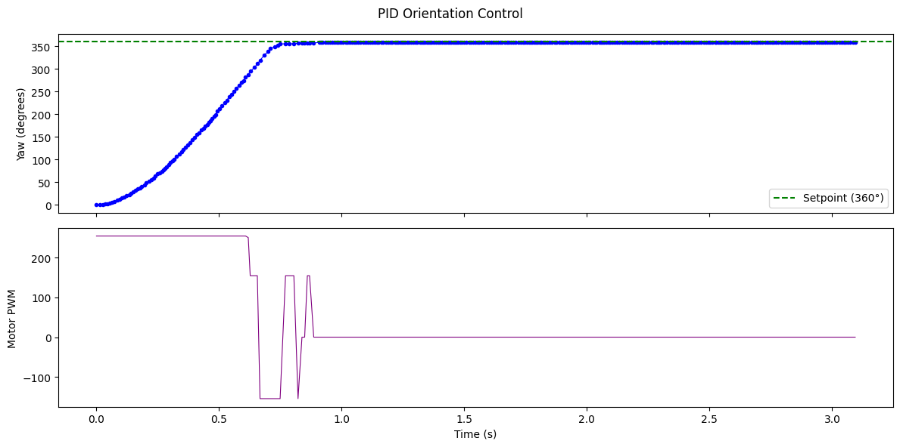
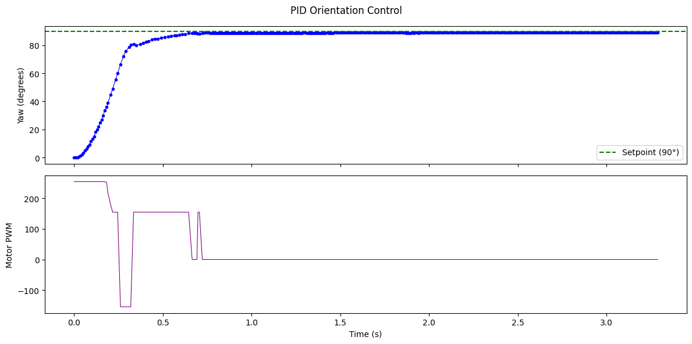
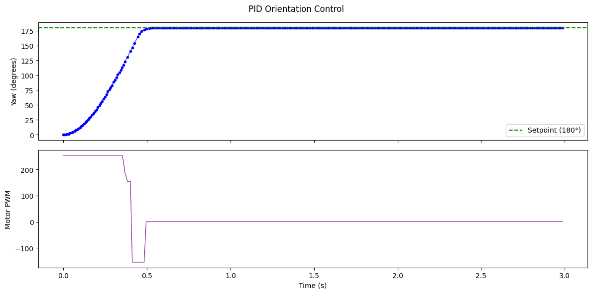

Prelab
The BLE infrastructure from Lab 5 was extended with two new commands: PID_ORIENT starts the orientation controller with an optional setpoint argument, and SET_SETPOINT changes the target angle mid-run. The existing SET_PID_GAINS allows wireless tuning. A pid_mode flag switches between position control (mode 0) and orientation control (mode 1) within the same runPID() framework. The IMU module (imu.h/imu.cpp), implemented in Lab 3 with gyroscope integration, low-pass filtering, and complementary filtering, was reused for yaw estimation. During a PID run, all data (timestamps, yaw angles, motor commands) is stored in on-board arrays. After the run completes, GET_PID_LOG sends the logged data back to the laptop over BLE, where a Python notification handler parses it into arrays for plotting.
# Typical orientation test workflow
ble.send_command(CMD.SET_PID_GAINS, "8|0|0.5")
ble.send_command(CMD.PID_ORIENT, "90") # Turn 90 degrees
# Mid-run setpoint change:
ble.send_command(CMD.SET_SETPOINT, "180") # Now target 180Lab Tasks
PID Input Signal
Orientation is estimated by integrating the gyroscope's Z-axis output (gyrZ()) using micros() for sub-millisecond timing precision. This prevents the double-counting issue that occurred with millis(), where multiple IMU reads within the same millisecond produced incorrect dt values.
yaw_g += gyrZ() * dt
Gyro bias and drift: The gyroscope has a small bias (~0.5-2 deg/s when stationary) that accumulates through integration. Over a 7-second run, this could theoretically produce 3.5-14 degrees of drift. In practice, our drift was consistently near the lower bound, typically under 3 degrees, which falls within our brake zone tolerance. We attribute this to accurate micros() timing and low ambient vibration at setpoint.
DMP consideration: The ICM-20948 includes a Digital Motion Processor that fuses accelerometer, gyroscope, and magnetometer data on-chip for a drift-corrected orientation estimate at up to 1.1 kHz. For our 7-second runs, raw integration was sufficient since observed drift was minimal. For longer navigation or stunt sequences, DMP would be essential as drift accumulates over minutes.
Gyroscope range: The ICM-20948 defaults to +/-250 dps. During aggressive turns, our robot exceeded this, causing the sensor to saturate and the integrated angle to fall behind. The car would overshoot because the PID thought it hadn't turned far enough. We fixed this by increasing the range to +/-2000 dps:
ICM_20948_fss_t fss;
fss.g = dps2000;
myICM.setFullScale((ICM_20948_Internal_Gyr), fss);Controller Design
A PD controller drives the robot differentially (one wheel forward, one backward) for in-place rotation. We chose PD over full PID because the grippy tires provide strong natural braking and the brake zone eliminates steady-state error, making an integral term unnecessary. P-only was tested first but caused oscillation due to the high deadband minimum; the D term damps this effectively.
P_term = Kp * error
D_term = Kd * LPF(-gyrZ()) // low-pass filtered, negated to oppose motion
motor_cmd = P_term + D_term
A brake zone of 3 degrees around the setpoint calls brakeMotors() to hold position. The turn deadband is 155 PWM (from Lab 4 on-axis turn testing on wood).
Derivative Term
Using gyrZ() directly: Since yaw is the integral of gyro rate, the derivative of yaw is simply the gyro rate. Rather than numerically differentiating the yaw signal (which amplifies noise), we use gyrZ() directly.
Low-pass filter: We apply a first-order low-pass filter to the D term to smooth any high-frequency noise, reusing the same filter structure from Lab 5:
d_filtered = d_alpha * (-gyro_rate) + (1 - d_alpha) * d_filtered;
float d_term = kd * d_filtered; // d_alpha = 0.5Derivative kick: The D term uses the gyro rate (measurement derivative) rather than the error derivative. Changing the setpoint mid-run does not produce a derivative spike because the gyro rate is unaffected by setpoint changes. This makes SET_SETPOINT safe to call during active control.
Gain Tuning
Final gains: Kp = 8.0, Kd = 0.5. The high Kp works because the grippy tires provide strong natural braking. Starting at Kp = 0.5 (too slow), gains were increased. At Kp = 2.0, the car vibrated at setpoint due to the 155 PWM deadband minimum jerking the car back and forth. At Kp = 8.0 with Kd = 0.5, the car snaps to the target angle and tire friction stops it immediately. The brake zone eliminates residual jitter.
Results



Perturbation Recovery
With the PID holding setpoint 0, the car was pushed by hand in both directions. It returns to the target heading after each disturbance:
Programming Implementation
BLE commands during PID execution: The main loop calls write_data() and read_data() every iteration, even while the PID is active. When a SET_SETPOINT command arrives mid-run, it updates pid_setpoint immediately, and the next PID iteration responds accordingly with no restart required. This is critical for future navigation where the setpoint must update continuously.
Future Work
Combined linear + orientation control would allow the robot to drive forward while maintaining a heading. DMP integration would eliminate drift for longer runs. Both are planned for future labs.
Acknowledgements
Claude AI was used for assistance with PID controller adaptation from linear to orientation control, debugging gyroscope integration timing and range configuration, and structuring this report. All hardware testing, gain tuning, data collection, and video recording were done by me.